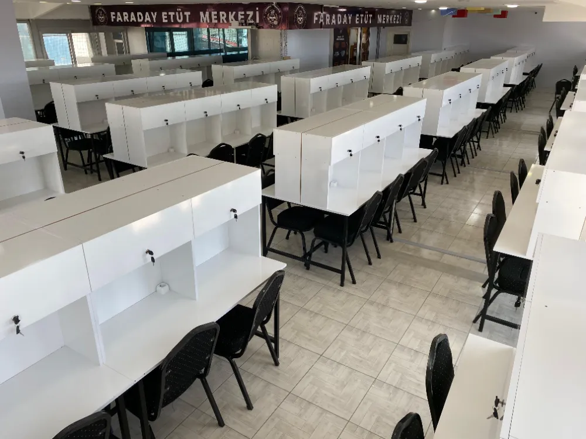
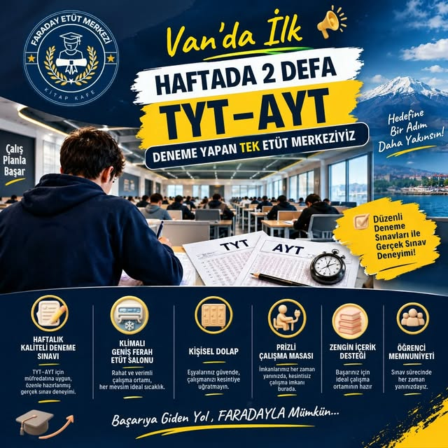
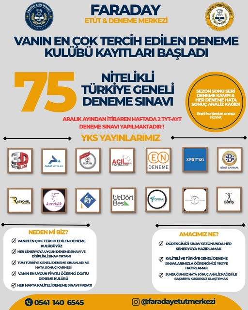
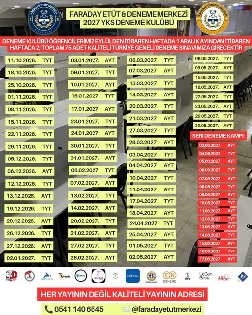
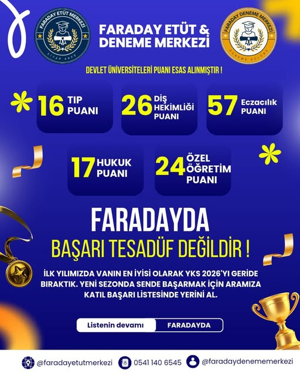
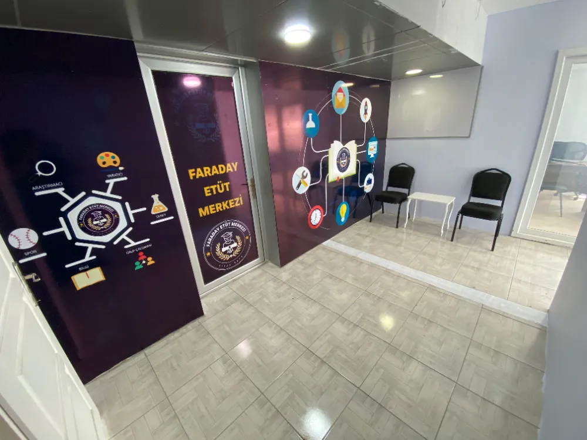
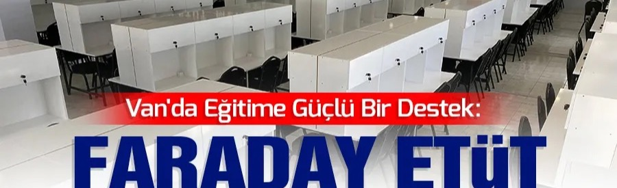
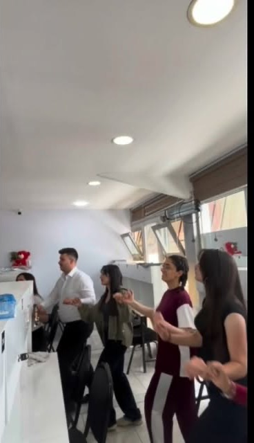
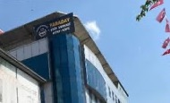

01
Kilitli dolaplı, size özel masa
Kayıtla birlikte prizli, kilitli dolaplı ve yalnızca size ait bir masa; kitaplarınız her gün aynı masada sizi bekler.

Faraday Etüt Merkezi — Van
Kilitli dolaplı kişisel masanız, her hafta YKS & KPSS denemeleri, sessiz bir salon ve dost bir kahve. Hayalleriniz korumamız altında.
Adres
Cumhuriyet Cd. · Değer İş Merkezi, Kat 6
Telefon
0541 140 65 45
Denemeler
Cumartesi–Pazar ritmiyle, her hafta
Sayılarla
0
farklı sınava aynı takvimle hazırlık — TYT, AYT, KPSS, ÖABT, AGS, DGS, ALES
0
Türkiye geneli AYT-TYT seri deneme — etüt kayıtlarında hediye
0
takipçi @faradayetutmerkezi hesabında günlük disiplin akışı
0
kazanan öğrenci — ilk yılda Tıp, Diş, Eczacılık, Hukuk ve Özel Öğretim dâhil
Farkımız
Dört madde. Başka iddialar yok, süslü vaatler yok: iyi masa, sessiz salon, ölçülebilir deneme ritmi ve canınız sıkıldığında bir fincan kahve.
Salonu gez, yerini gör01
Kayıtla birlikte prizli, kilitli dolaplı ve yalnızca size ait bir masa; kitaplarınız her gün aynı masada sizi bekler.
02
Telefonlar sessizde, sohbet koridorda. Salonun tamamı tek bir ritimde çalışır; gerisi zaten kendiliğinden gelir.
03
Cumartesi ve pazar günlerinde Türkiye geneli YKS ve KPSS denemeleri; ardından hata ve sonuç analiz kâğıdı. Zayıf konularınız her hafta net tabloya düşer.
04
Çay, kahve ve kısa bir nefes: kantin köşesi gün boyu açık, kitap kafe masalarınızın hemen yanında.
Sınırsız Wi-Fi, klima konforu ve prizli masalar salonun standartlarında.
Deneme Sınavları
Faraday'da deneme bir etkinlik değil, bir sistem: her cumartesi–pazar ölçüm, her hatanın analizi, her zayıf konunun kapandığı bir sonraki hafta. YKS ve KPSS öğrencileri için ayrı ayrı takvim.
Kaydını ayırt. Etüt üyesi öğrenciye haftalık deneme otomatik tanımlanır; dışarıdan katılım için sınırlı kontenjan vardır.
Gerçek koşullar. Optik form, süre baskısı ve sessiz salon: sınav günü aynen bu ortamda çalışırsınız.
Analiz kâğıdı. Hata ve sonuç tablosu ile netleriniz, konu eksikleriniz her hafta masanızda hazır gelir.



Kampanyalar
Güncel kampanyalar Instagram'da da paylaşılıyor; kayıt dönemini kaçırmamak için takipte kalın.
Afişler Instagram hesabımızdan alıntıdır · güncel kampanyalar için @faradayetutmerkezi
Kazananlar
İlk yılımızda Van'ın en iyisi olarak YKS 2026'yı geride bıraktık. Yeni sezonda siz de başarmak için aramıza katılın, başarı listesinde yerinizi alın.
* Devlet üniversiteleri puanı esas alınmıştır. Listenin devamı Instagram'daki ✅KAZANANLAR✅ öne çıkanımızda.

Instagram afişi · @faradayetutmerkezi
Galeri
Çalışma salonu
Ferah salon, prizli kişisel masalar

Giriş katı
Deneme günü

Açılış günü
Tek büyük salon, tek bir ritim

Mola & kitap köşesi
Fotoğraf bekleniyor
Kilitli dolaplı masa
images/dolap.jpg olarak ekleyin

Cumhuriyet Cd. · Değer İş Mrk.
Google Yorumları
S*** H.
Google yorumu
"Salon çok ferah ve gerçekten sessiz. Kilitli dolabım sayesinde kitaplarımı bırakıp rahatlıkla çıkabiliyorum."
M**** K.
Google yorumu
"Her cumartesi-pazar deneme gerçekten nitelikli, net takibi çok iyi yapılıyor. KPSS hazırlığı için Van'da seçkin bir adres."
B*** Y.
Google yorumu
"Kitap kafe köşesi mola için ideal; hocalara da kolayca ulaşıyorsun. Gönül rahatlığıyla öneririm."
* Yorumlar şablondur; Google Maps profilindeki gerçek yorumlarla güncellenmelidir.
Soru–Cevap
Aklınıza takılan başka bir soru varsa doğrudan yazın; hafta içi her saat yanıt veriyoruz.
WhatsApp'tan sorHafta içi ve hafta sonu, sabah erken saatlerden akşam geç saatlere kadar açık bir çalışma salonu konseptimiz var. Güncel ve sezonluk çalışma saatleri için bize WhatsApp'tan ulaşabilirsiniz.
Aylık ve sezonluk paketler ile tercih ettiğiniz hizmete göre fiyat değişir. Yıllık kayıtlarda avantajlı kampanyalar, aylık bütçe dostu paketler ve seri deneme setleri mevcut. Güncel liste için WhatsApp'ta yazın; size en uygun paketi birlikte belirleyelim.
Haftalık denemeler Faraday öğrencilerine çalışma rutininin bir parçası olarak sunulur. Etüt üyesi olmayanlar için sınırlı kontenjanla dışarıdan katılım da mümkündür: WhatsApp'tan yerinizi ayırtın, deneme takviminde yerinizi alın; sonuçla birlikte hata–analiz kâğıdınız da paylaşılır.
Kayıt sürecinde size özel kilitli dolaplı sabit masa tahsis edilir. Masa kontenjanı sınırlı olduğundan özellikle sezon başında erken kayıt önerilir; kitaplarınız her gün aynı masada sizi bekler.
Merkezimiz Cumhuriyet Caddesi'nde, Anadolu Sahaf Kırtasiye'nin ön sokakndaki Değer İş Merkezi'nin 6. katındadır. Sessiz çalışma kuralları, yalnızca kayıtlı öğrencilere masa tahsisi ve sürekli gözetimle güvenli, disiplinli bir ortam sunuyoruz. Velilerin tüm soruları için WhatsApp hattımız ayrıca açıktır.
Konum & İletişim
Anadolu Sahaf Kırtasiyesi'nin ön sokağındaki Değer İş Merkezi'nin 6. katı — İpekyolu / Van.